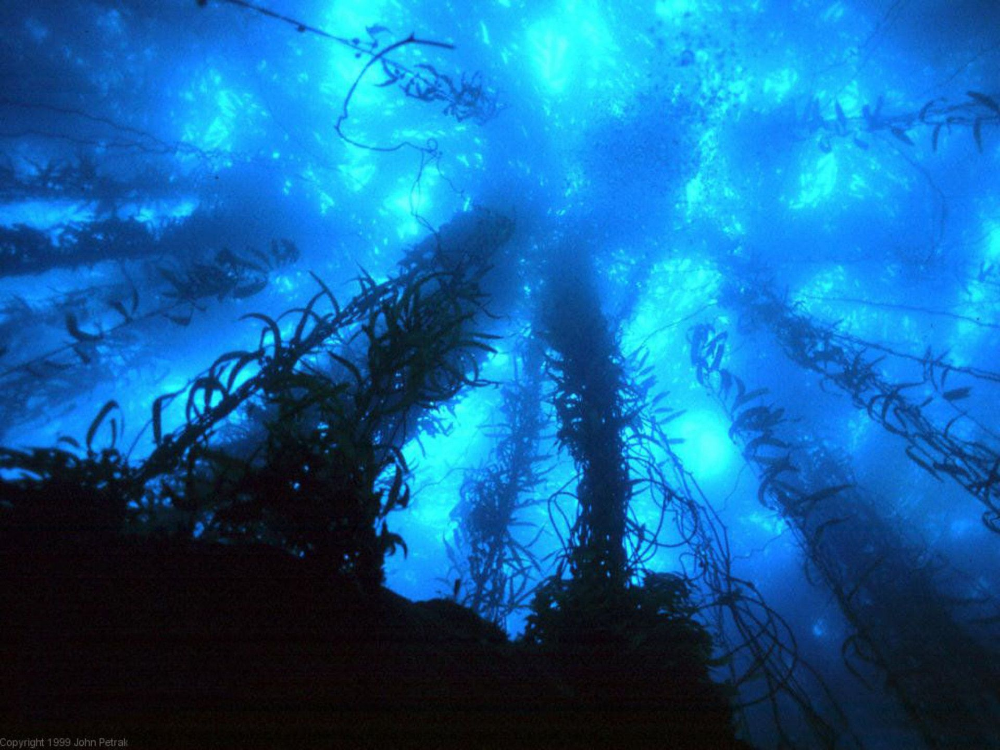

Angler fish can be found all over the world living at ocean depths of at least
6600 feet. They are a unique species of fish that utilize bioluminescense on specially
evolved "lures" that can attract pray while they lie in wait. Along with their lure,
angler fish can extend their mouths allowing them to swallow prey almost twice their size.
Only female angler fish hunt for prey, as the males lead a parisitic life and exist solely for mating.
Their bioluminescense stems from a symbiotic relationship with bacteria that reside in the fleshy area of
their lure. There is a great variety of angler fish that exist with many specialized forms depending on the environment
they are in, and thus their body types are highly determined by their habitat.